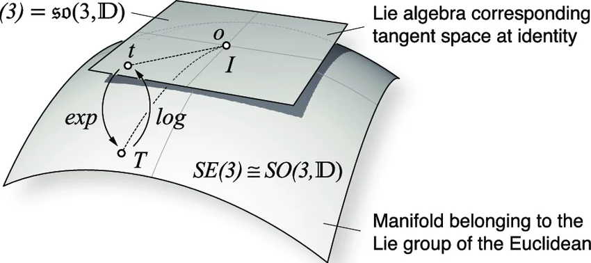

10 Lie algebra sl(2)
This chapter is heavily inspired by the excellent video “how to understand all of lie algebras with one picture” by Micheal Penn.
10.1 the group SL(2)
The group SL(2) is the group of 2x2 matrices with determinant 1. It is a fundamental example in the study of Lie groups and Lie algebras. The determinant of a matrix measures volume scaling. If you apply a linear transformation with matrix A to a region of space, the volume gets multiplied by \det(A). So \det=1 means volume preserving transformations. This is a very natural class of symmetries — transformations that don’t shrink or expand space, just reshape it.
A general element of this group can be written as:
A = \begin{pmatrix} a & b \\ c & d \end{pmatrix}
where a, b, c, d \in \mathbb{C} and the determinant is 1, i.e., ad - bc = 1.
Change of point of view. Each of the elements a,b,c,d is complex-valued, and we can imagine that every matrix in SL(2,\mathbb{C}) is a point in an 4-dimensional complex space \mathbb{C}^4 . However, the constraint that the determinant equals 1 reduces the degrees of freedom by 1, meaning that the group SL(2,\mathbb{C}) is a 3-dimensional surface embedded in a larger \mathbb{C}^4. If you prefer to think of 1 complex dimension as equivalent to 2 real dimensions, then just multiply all the dimensions by 2. This surface is curved, because of the nonlinear constraint ad - bc = 1. In mathematical parlance, we call this surface a manifold.
10.2 commutator
Putting one’s socks on, and then the shoes, is not the same as putting the shoes on and then the socks. The order of operations often matters. If I have two elements X,Y of my SL(2) group (i.e. matrices) will the order of operations matter?
XY \stackrel{?}{=} YX
In order to find the difference between the two sides of the equation, ideally I would subtract the same quantity from both sides. Unfortunately, groups only have multiplication and the inverse, not addition/subtraction. To measure the effect of doing operations in different orders, we compute
XYX^{-1}Y^{-1}
10.3 tangent space
Let’s parametrize each element of the 2x2 matrix in SL(2) with the variable t:
A(t) = \begin{pmatrix} a(t) & b(t) \\ c(t) & d(t) \end{pmatrix}.
We can imagine that this parametrization defines a general curve in the manifold of SL(2). We will require that this curve passes through the identity element of SL(2) at t = 0:
A(t)\Big|_{t=0} = \begin{pmatrix} a(t) & b(t) \\ c(t) & d(t) \end{pmatrix}_{t=0} = \begin{pmatrix} 1 & 0 \\ 0 & 1 \end{pmatrix}.
What we will do now is to take the derivative of this curve with respect to the parameter t, which will give us a vector in the tangent space of SL(2) at each point:
A'(t) = \begin{pmatrix} a'(t) & b'(t) \\ c'(t) & d'(t) \end{pmatrix}.
Let’s now compute the derivative of the condition ad - bc = 1 with respect to t, and evaluate it at t = 0:
\frac{d}{dt}(ad - bc)\Big|_{t=0} = \frac{da}{dt}d\Big|_{t=0} + a\frac{dd}{dt}\Big|_{t=0} - \cancel{\frac{db}{dt}c\Big|_{t=0}} - \cancel{b\frac{dc}{dt}\Big|_{t=0}} = 0.
The last two terms cancel out because at t = 0, we have b(0) = c(0) = 0. Also, at t = 0, we have a(0) = d(0) = 1, so we get:
a'(0) + d'(0) = 0.
This means that the derivative of the matrix A(t) at t = 0 is
A'(0) = \begin{pmatrix} a'(0) & b'(0) \\ c'(0) & d'(0) \end{pmatrix}, \text{ where } a'(0) + d'(0) = 0.
Let’s take stock of what happened. From Calculus (and Physics), we are used to the idea that taking the time-derivative of the position curve gives us a vector for the velocity. The velocity is tangent to the displacement curve at each point. That’s exactly what we did here, but we did it for all possible curves in the manifold that pass through the identity element of SL(2). By taking the derivative of the curves A(t) at t = 0 (at the identity element), we obtained vectors in the tangent space of SL(2) at that point. These new vectors have exactly the same dimension as the original (in this case 3 complex dimensions), but they live in a flat (Euclidean) space rather than in the curved manifold of SL(2).
A good image goes a long way. I copied the image below from this paper. This paper deals with another group and Lie algebra, but the drawing is good for us too. The curved surface represents the manifold of SL(2), and the plane above it represents the tangent space at the identity element. An element in the manifold (labeled T in the image, for us it’s A) gets mapped by the derivative to a point in the tangent space (labeled t in the image, for us it’s A').

10.4 The Lie Algebra sl(2)
What we just found is a new vector space related to the manifold. The elements in this flat space are given by
sl(2) = \left\{ \begin{pmatrix} a & b \\ c & d \end{pmatrix} \Big| a + d = 0 \right\}
This is a regular vector space of (complex) dimension 3. If we sum two elements of this space, we get another element of the same space. What promotes this vector space to an algebra is a way to multiply two elements together and stay inside the set. Remember the group commutator from before? Refresher: XYX^{-1}Y^{-1}. This measures “how much X and Y fail to commute” as group elements.
We want to push the group commutator XYX^{-1}Y^{-1} down to the tangent space, to find the natural product on sl(2).
To do this, we take X and Y to be group elements close to the identity — in other words, we take small steps away from I in two directions A and B in the tangent space:
X = I + \Delta t \, A, \quad Y = I + \Delta t \, B
where A, B \in sl(2) are tangent vectors (trace-zero matrices), and \Delta t is a small parameter.
We need X^{-1} and Y^{-1}. We use the matrix version of the geometric series expansion \frac{1}{1+x} \approx 1 - x + x^2 - \ldots:
(I + \Delta t \, A)^{-1} \approx I - \Delta t \, A + \Delta t^2 A^2 + O(\Delta t^3)
We can verify this is correct by multiplying both sides by (I + \Delta t \, A) and checking that everything cancels to give I, up to order \Delta t^2:
\begin{align*} & (I + \Delta t \, A)(I - \Delta t \, A + \Delta t^2 A^2) = \\ &=I - \Delta t \, A + \Delta t^2 A^2 + \Delta t \, A - \Delta t^2 A^2 + \Delta t^3 A^3 \\ &= I + O(\Delta t^3) \end{align*}
Similarly:
(I + \Delta t \, B)^{-1} \approx I - \Delta t \, B + \Delta t^2 B^2 + O(\Delta t^3)
Now we are ready to compute the group commutator.
Step 1 — compute XY:
XY = (I + \Delta t \, A)(I + \Delta t \, B) = I + \Delta t(A + B) + \Delta t^2 AB + O(\Delta t^3)
Step 2 — compute X^{-1}Y^{-1}:
X^{-1}Y^{-1} = (I - \Delta t \, A + \Delta t^2 A^2)(I - \Delta t \, B + \Delta t^2 B^2) = I - \Delta t(A+B) + \Delta t^2(A^2 + AB + B^2) + O(\Delta t^3)
Step 3 — multiply them together, keeping only terms up to \Delta t^2:
XYX^{-1}Y^{-1} = \bigl[I + \Delta t(A+B) + \Delta t^2 AB\bigr]\bigl[I - \Delta t(A+B) + \Delta t^2(A^2+AB+B^2)\bigr]
Expanding and collecting terms order by order:
- Order \Delta t^0: I
- Order \Delta t^1: +(A+B) - (A+B) = 0 — the first order terms cancel completely
- Order \Delta t^2: +(A^2+AB+B^2) - (A+B)^2 + AB
Let’s expand (A+B)^2 = A^2 + AB + BA + B^2 and substitute:
A^2 + AB + B^2 - A^2 - AB - BA - B^2 + AB = AB - BA
So we arrive at:
XYX^{-1}Y^{-1} = I + \Delta t^2(AB - BA) + O(\Delta t^3)
We now have a group element close to the identity, but we need to properly extract the tangent vector from it — just like we extract a tangent vector from a curve by dividing by \Delta t and taking the limit.
Recall how we computed the tangent vector of a single curve A(t):
A'(0) = \lim_{\Delta t \to 0} \frac{A(\Delta t) - I}{\Delta t}
We divided by \Delta t because a single group element moving away from the identity produces a leading correction of order \Delta t.
But here the leading correction is \Delta t^2, not \Delta t. Why? Because the group commutator involves two independent small steps — one of size \Delta t in the direction of A, another of size \Delta t in the direction of B. The commutator measures the interaction between these two steps.
Interactions between two small quantities are always second order — just like the cross term xy in a Taylor expansion in two variables. The first order terms only see each step individually, and they cancel completely, because going forward and coming back cancels to first order. What survives is the second order interaction between the two directions.
So the correct thing to do is to divide by \Delta t^2:
\frac{XYX^{-1}Y^{-1} - I}{\Delta t^2} = AB - BA + O(\Delta t)
And taking the limit:
\lim_{\Delta t \to 0} \frac{XYX^{-1}Y^{-1} - I}{\Delta t^2} = AB - BA
This is the Lie bracket, also called the commutator:
[A, B] = AB - BA
We need to verify that [A,B] is itself a trace-zero matrix — that is, it stays inside sl(2). Using the fact that \text{trace}(AB) = \text{trace}(BA) always holds (regardless of whether AB = BA):
\text{trace}([A,B]) = \text{trace}(AB - BA) = \text{trace}(AB) - \text{trace}(BA) = 0
The Lie bracket is not invented — it is inherited from the group commutator. It is the leading order remnant of asking “how much do A and B fail to commute?”, pushed down from the curved group to the flat tangent space via a second order perturbation expansion.
This promotes sl(2) from a mere vector space to a Lie algebra: a vector space equipped with the bracket product [A,B] = AB - BA.